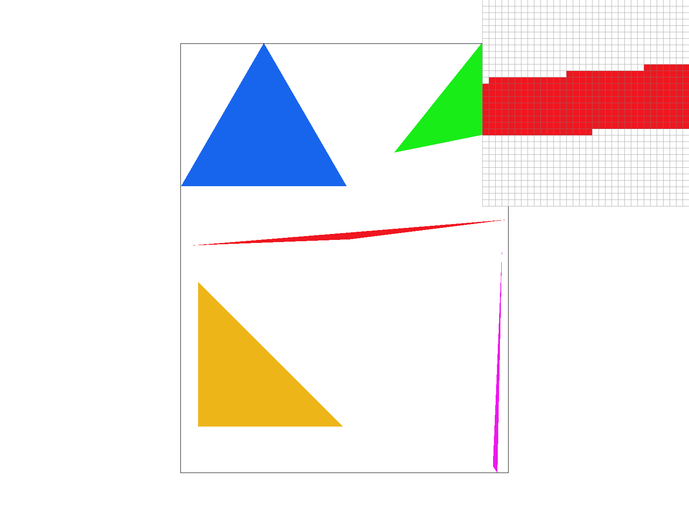

CS184/284A Spring 2025 Homework 1 Write-Up
Names: Ann Basil
Link to webpage: https://cal-cs184-student.github.io/hw-webpages-hammertime/hw1/index.html
Link to GitHub repository: https://github.com/cal-cs184-student/sp25-hw1-ann
Overview
Give a high-level overview of what you implemented in this homework. Think about what you've built as a whole. Share your thoughts on what interesting things you've learned from completing the homework.Use of GenAI: I have used ChatGPT to look up how to use functions in C++ such as for loops and initialization as I’ve had no prior experience with C++, so it was used purely to learn the language.
Overview: Overall, I’ve implemented a rasterizer that can supersample, do texture magnification via sample nearest and sample bilinearly, and interpolate colors. I’ve learned a bit more implementing this project, even if I couldn’t finish the last question, and I learned a lot in how to think about bilinear sampling, thanks to the wonderful TA’s in Project Parties and OHs.
Task 1: Drawing Single-Color Triangles
I check the winding order by doing the dot product method, and if it’s greater than zero, it’s counterclockwise, and clockwise otherwise. Knowing the winding order, I created a PointInTriangle Test which takes the point test found in the lecture and returns true if the outcome is greater than or equal to zero (which means it is in the triangle), and false otherwise (points inputted in the correct winding order as determined by the WindingOrderTest earlier). I also made a bounding rectangle around the triangle using the furthest left and right points of the triangle and the max and min y coordinates of the triangle to sample points using the PointinTriangle test. I run the main chunk of the algorithm within two for loops. PointinTriangle runs three times for each Triangle Side and if it’s determined that it’s fully within the triangle, I rasterize the point. My algorithm is no worse than the algorithm that checks the triangle within the bounding box of the rectangle because it is that algorithm thus it’s the same. It assures it’s the smallest rectangle possible by using the vertices of the triangle itself as a way to find the width and height of the bounding box and sample within that shape.|  |
Task 2: Antialiasing by Supersampling
Supersampling is a way of reducing jaggies and making an image a bit more clear/refined, and is helpful since it’s a way of implementing anti-aliasing measures. I used supersampling to anti alias my triangles by providing more sample points within one pixel to grab colors from and input into the sample buffer before averaging it down into the frame buffer. Having a more precise level of detail means I don’t have to take one sample and use the color directly, but instead can take an average of the color if there are diagonal lines through the image/pixel so there’s a smoothing effect, instead of leaving jagged edges. My function is largely the same, except that I have an extra two for loops that help traverse through the sample buffer and indexes directly into the sample buffer to place the color (since that’s where we can keep our extra samples since the frame buffer works in integers while the sample buffer can be done in doubles, and average down to a more intermediate color and sharper image focus). I make sure to average down the sample buffer data in resolve_to_framebuffer. The images below look the way that they are since it’s averaging 1, 4, or 16 times worth of data in a pixel down into the colors we see. Super sample rate 1 has no supersampling so we see the dots/disconnected lines around in the zoomed-in portion. With SSR 4, there’s more of an average so the line smooths out in between, and in 16, it’s such high definition that the hole shows up again, but it’s far more smoothed out to help make the triangle clearer.|
|
|
|
|
Task 3: Transforms
I was trying to make the robot into the Roblox default noob, striking a sassy pose! In transforms.cpp, I set up the matrices and filled them in according to their specific transforms are mentioned in lecture. I then directly edited the SVG file of the copy of the robot, and changed the colors of the body, changed the head’s proportion, and rotated the arm and hand.|
|
Task 4: Barycentric coordinates
Barycentric coordinates are a coordinate system you can use within a triangle, and can be used to interpolate points, colors, or textures between the vertices using various weights depending on how far away you are from certain vertices. Down below, I set the vertices to be Red, Blue, and Green at specific vertices and used Barycentric coordinates to interpolate the colors on every point in the triangle, causing it to be a smooth blending of colors between the vertices, which is why its more purplish-grey in the center since it’s a mix of the colors. My approach was the same as my super sampling approach, except I also calculated the alpha, beta, and gamma values before multiplying them to their respective vertices color, adding it up and putting it into our sample buffer.

|
|
Task 5: "Pixel sampling" for texture mapping
Pixel sampling is finding the corresponding point on a texture map (texel) that maps onto your specific pixel on the image, and sampling it to display on the image itself, using a bit of barycentric coordinates to help interpolate textures correctly across the image. Nearest sampling just clamps directly onto the nearest texel itself, and uses that as a sample, while bilinear takes the four nearest texels and “averages” it down to get an intermediate value that is typically clearer than nearest sampling (having an anti-aliasing effect in a way), which can be seen down below, where the lines are less jagged in Bilinear sampling and are a lot more smoothed out, if not a little blurrier. And as mentioned in Task 2, with a higher rate of Super Sampling, the image smoothes out more. There likely will be a larger difference when the texture image is smaller/there are less texels per pixel, since averaging the texels will yield a bit more clarity versus clamping to the nearest texel but this will have one texel represent more of the image than before. There will be a lot less clarity in this version of nearest sampling versus bilinear sampling since bilinear sampling able to sample more and average down for a more accurate texture sample, which can be better seen in more bitcrushed images/smaller images since there’s less texels to work with and get lost in so averaging has a far more pronounced impact than there would be if there much more texels. My implementation of this is similar to Task 4, where instead of setting up specific vertices colors, I instead created a 2D vector filled with the corresponding vertex uv coordinates and multiplied them by their associated weights before putting them into the sample parameters struct, and grabbing the color from the sample techniques I implemented, and placing it directly into the sample buffer. Sample_nearest and sample_bilinear were done similarly, where I would grab the texel the pixel corresponded to before returning it. In sample bilinear, I also did this four times, flooring and taking the ceiling of the texel coordinates before calling get texel to get the nearest four texels to call lerp on before returning the final color. I did have some issues with the Berkeley logo bilinear sampling, where there were stray artifacts, and despite clamping, it still would have a few stray pixels.|
|
|
|
|
|